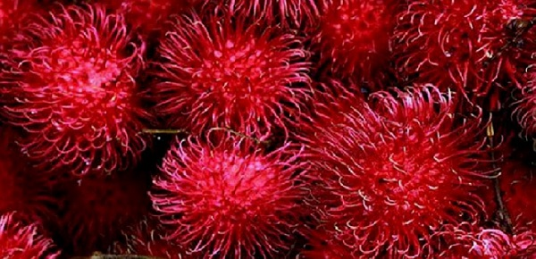
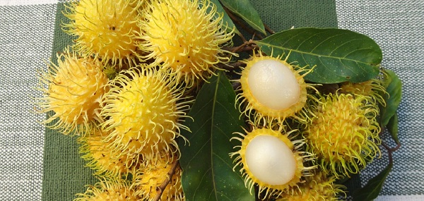

O nosso objetivo é: estudar, analisar e contemplar a beleza que é o rambutão.
O rambutão é o fruto da rambuteira, uma árvore tropical da família Sapindaceae, e é nativa do Arquipélago Malaio.
O rambutão é uma fruta exótica com a cor vermelha (pode raramente ser amarela) que tem uma casca dura com vários fios (variam entre vermelho e verde em cada rambutão) que lembram espinhos apesar de não machucar no toque, e um interior carnudo translucido que tem chance de ser branco ou rosa com um gosto doce e um pouco ácido.
Rambutão Vermelho

Rambutão Amarelo

Rambutão Vermelho com "espinhos" verdes

Ele é encontrado em abundancia na região sudeste da Ásia e na Tailândia, mas recentemente começou a ser cultivado na parte norte do Brasil.
O seu nome tem origem malaica, especificamente a a palavra rambut, que significa "cabelo", e é por causa do exterior dele que tem esses cabelos que recebeu o nome de "rambutão" (existe outras maneiras de falar/escrever o seu nome, como: rambutan e rambutã).